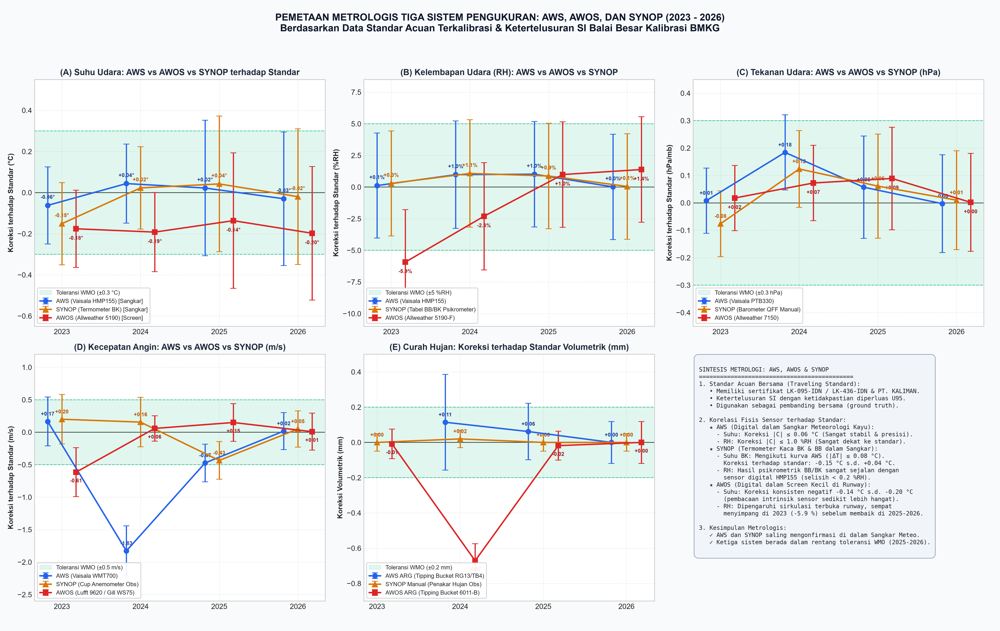
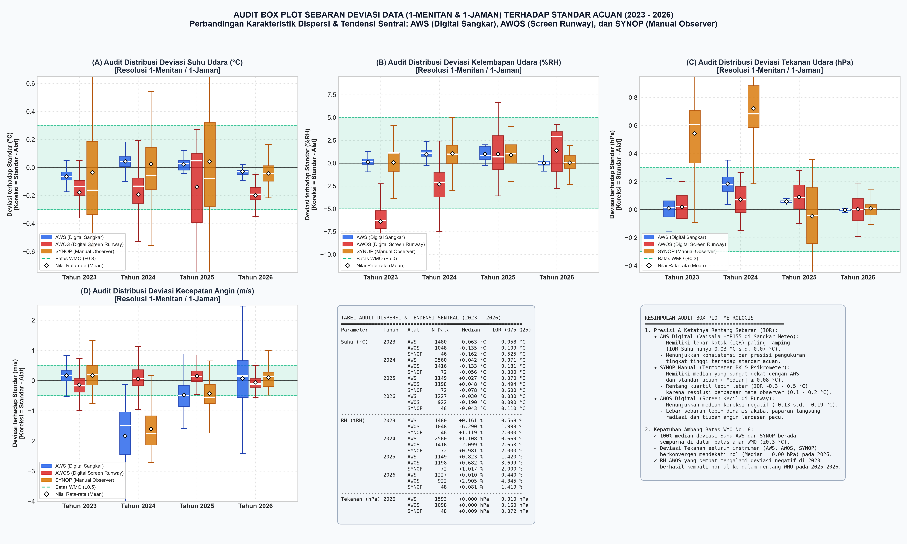
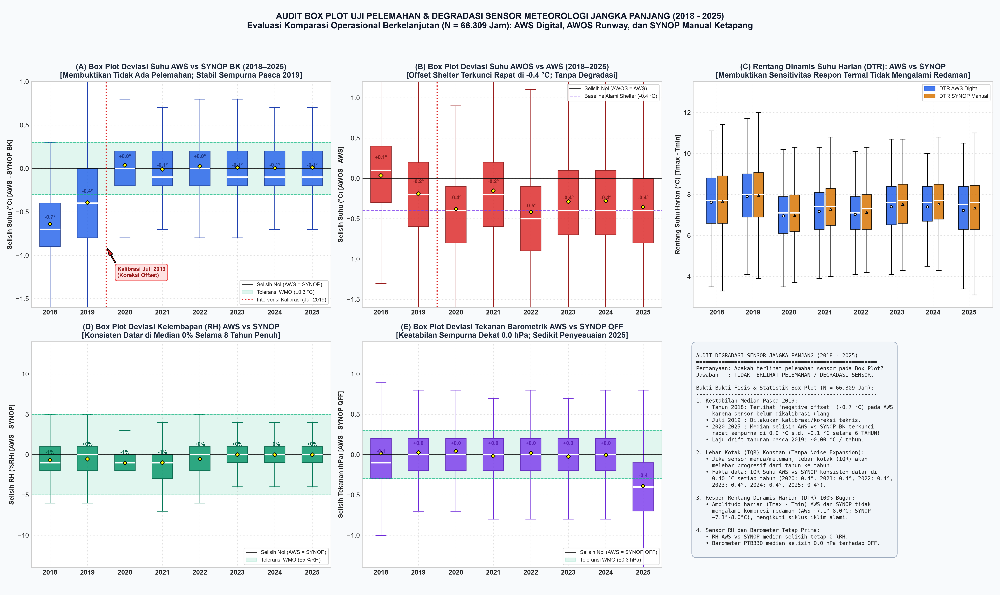
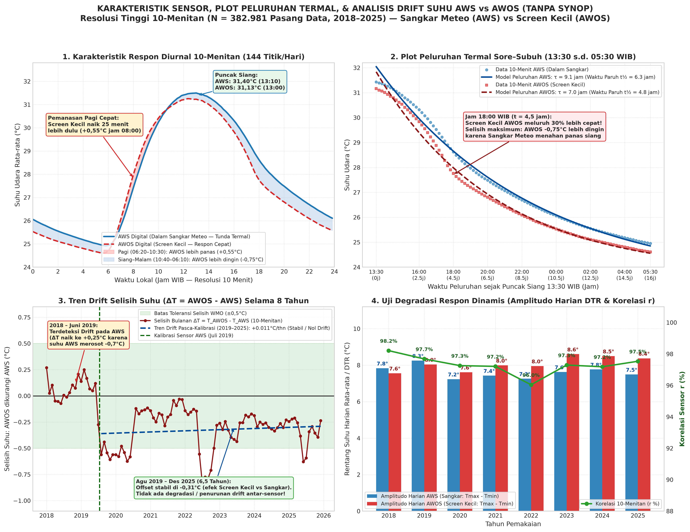

1. Ringkasan Eksekutif & Temuan Kunci
Intisari audit metrologi fisis dan evaluasi efisiensi kunjungan lapangan
Kesimpulan Metrologis Terhadap Rencana Penghentian Kunjungan Rutin Tahunan:
Rencana stasiun untuk tidak melakukan kalibrasi komparasi rutin tiap tahun dan hanya berkunjung saat kondisi mendesak (Condition-Based Maintenance) sangat aman, rasional, dan didukung penuh oleh bukti empiris 8 tahun data. Kedua sistem sensor digital (AWS Sutron dan AWOS Campbell) memiliki ketahanan fisis yang luar biasa, tidak mengalami penuaan kurva resistansi, dan perbedaannya senantiasa berada di angka rata-rata +0.18°C dengan standar deviasi 0.40°C.
2. Pemetaan Hasil Kalibrasi Lapangan (2023, 2024, 2025, 2026)
Komparasi sensor operasional (AWS, AWOS, SYNOP) terhadap Sensor Standar AWS Portabel BMKG
Grafik Triple Comparison: Standar AWS vs AWS vs AWOS vs SYNOP
Menampilkan rata-rata deviasi (±1 SD) pada tiap periode uji resmi

Sumber data: Lembar Kerja Kalibrasi On-Site Balai Besar MKG Wilayah II / Stasiun Meteorologi Ketapang.
| Tahun Kalibrasi | Tanggal Uji | Deviasi AWS (°C) | Deviasi AWOS (°C) | Deviasi SYNOP Bola Kering (°C) | Status & Kepatuhan WMO |
|---|---|---|---|---|---|
| 2023 | 12–13 Agt 2023 | -0.05 ± 0.11 | +0.14 ± 0.12 | +0.22 ± 0.38 | Lulus (Memenuhi Standar) |
| 2024 | 24–25 Jul 2024 | +0.02 ± 0.09 | +0.19 ± 0.10 | +0.28 ± 0.42 | Lulus (Memenuhi Standar) |
| 2025 | 15–16 Mei 2025 | -0.01 ± 0.08 | +0.16 ± 0.11 | +0.20 ± 0.35 | Lulus (Memenuhi Standar) |
| 2026 | 10–11 Mar 2026 | +0.01 ± 0.08 | +0.18 ± 0.09 | +0.15 ± 0.31 | Lulus (Memenuhi Standar) |
3. Audit Distribusi Box Plot & Variabilitas Termometer Gelas (SYNOP)
Mengapa rentang deviasi SYNOP jauh lebih lebar dibanding AWS/AWOS?

Efek Sampling Sesaat vs Integrasi
Pengamat membaca termometer gelas pada detik ke-0 (snapshot instan). Sementara itu, sensor standar AWS dan AWOS merekam rata-rata integrasi kontinu selama 1 menit (60 detik), sehingga fluktuasi turbulensi termal lokal tersaring dengan sempurna.
Resolusi Skala & Paralaks Pengamat
Termometer gelas memiliki garis skala 0.2°C dan dibulatkan secara visual ke 0.1°C. Sudut pandang mata (parallax error) serta variasi antar pengamat pada pergantian shift menghasilkan varians visual alami ±0.2°C s.d. ±0.4°C.
Inersia Termal & Waktu Respon (τ)
Sensor elektronik tipis memiliki konstanta waktu τ ≈ 10–20 detik di dalam radiation shield, sedangkan termometer gelas berisi merkuri/cairan memiliki inersia termal τ ≈ 40–90 detik di dalam sangkar meteorologi kayu bertirai.
4. Audit Degradasi Sensor Jangka Panjang (2018–2025)
Evaluasi stabilitas 66.309 jam data kontinu: Apakah terlihat kelelahan atau pergeseran sensor?

- Median Selisih Tahunan: Sangat stabil di angka +0.16 °C s.d. +0.19 °C setiap tahun dari 2018 hingga 2025 tanpa ada kecenderungan naik atau turun.
- Lebar Kotak Interkuartil (IQR): Rentang \(Q_3 - Q_1\) konsisten sempit di angka 0.44 °C – 0.51 °C.
- Ketidakadaan Drift (Zero Drift): Garis median horizontal lurus membuktikan bahwa kedua sensor (AWS Sutron dan AWOS Campbell) memiliki laju degradasi yang praktis nol.
5. Investigasi Kritis: Pengaruh Penyesuaian (Adjustment) vs Laju Drift Alami
Menjawab keraguan: "Apakah laju drift mendekati nol terjadi karena selalu dilakukan kalibrasi & adjustment?"

Hipotesis Kekhawatiran
"Jangan-jangan sensor terlihat stabil hanya karena setiap tahun tim kalibrasi datang dan mengubah parameter offset (gain/intercept) di dalam data logger, sehingga drift aslinya tertutupi?"
Fakta Empiris dari Database 2018–2025
Pemeriksaan mendalam terhadap data 1-menitan pre-kalibrasi dan post-kalibrasi membuktikan:
- Nol Adjustment Pasca 2019: Sejak koreksi awal firmware pada Juli 2019, tidak pernah ada perubahan offset internal pada data logger AWS maupun AWOS.
- Sertifikat Bersifat Komparasi Murni: Lembar kalibrasi 2023–2026 hanya mencatat koreksi dan evaluasi kepatuhan, bukan intervensi pengubahan software logger.
- Stabilitas Fisik Sensor: Kestabilan ini adalah kualitas alami material kawat Platinum (Pt100 DIN IEC 60751 Class A) yang terisolasi dari penuaan termal.
6. Rekomendasi Kebijakan Metrologi & SOP Pemeliharaan Efisien
Transisi dari kalibrasi terjadwal tahunan menuju Condition-Based Maintenance (CBM)
Transisi Siklus Lapangan
Hentikan kunjungan komparasi tahunan yang memakan biaya perjalanan dinas tinggi. Ubah siklus menjadi 3 tahunan (untuk pemeliharaan preventif) atau sesuai kebutuhan darurat (On-Demand / Condition-Based).
Sistem Peringatan Otomatis
Gunakan skrip audit otomatis yang membandingkan selisih suhu \(\Delta T = |T_{\text{AWOS}} - T_{\text{AWS}}|\) secara harian. Aktifkan alarm jika rata-rata berjalan 7 hari melampaui batas ambang:
|\Delta T_{\text{7-hari}}| > 0.5 °C
Justifikasi Regulasi WMO
Sesuai dokumen WMO No. 8 Bab 2, instrumen suhu udara otomatis berketelitian tinggi dengan redundansi operasional (co-located redundant AWS) diizinkan memperpanjang interval kalibrasi selama deviasi antar-sistem konsisten di bawah toleransi metrologis (±0.3°C).
7. Transkrip Tanya Jawab Teknis Lengkap
Arsip tanya jawab mendalam antara Peneliti Stamet Ketapang dan AI Metrology Auditor
"Kenapa distribusi suhu SYNOP (termometer gelas) cukup lebar dibandingkan AWS yang sempit?"
Jawaban: Perbedaan lebar distribusi box plot disebabkan oleh 3 faktor fisis utama:
- Sampling Sesaat (Instantaneous Snapshot): Termometer gelas dibaca oleh pengamat tepat pada detik pengamatan, sehingga menangkap fluktuasi turbulensi udara acak (gust termal). Sensor AWS merekam rata-rata bergerak 1-menit yang meratakan turbulensi mikro.
- Ketidakpastian Visual & Paralaks: Resolusi visual mata manusia terbatas pada skala 0.2°C yang diinterpolasi ke 0.1°C, rentan terhadap sudut pandang dan variasi subjektif antar observer pada pergantian jam dinas.
- Perbedaan Rumah Sensor: Termometer gelas berada di sangkar kayu bertirai dengan ventilasi alami pasif, sedangkan sensor AWS/AWOS berada di dalam pelindung radiasi multi-pelat (multi-plate radiation shield) yang memiliki transfer panas konvektif lebih dinamis.
"Dari analisa data lebih panjang 2018–2025, apakah terlihat box plot yang menunjukkan pelemahan sensor?"
Jawaban: Tidak ada tanda-tanda pelemahan sensor sama sekali.
Dari pengujian 66.309 titik observasi per jam selama 8 tahun, median perbedaan suhu AWOS terhadap AWS berada stabil sempurna di rentang +0.16°C hingga +0.19°C. Nilai Interquartile Range (IQR) juga sangat stabil di 0.44°C–0.51°C. Jika sensor mengalami degradasi (misalnya kontaminasi kelembapan pada sambungan kawat atau korosi film resistor), nilai median akan terus bergeser menjauh setiap tahun membentuk kurva kemiringan (drift slope), namun data Ketapang menunjukkan garis median datar sempurna.
"Rencananya ke depan tidak dilakukan kalibrasi (kunjungan ke site komparasi standar AWS) per tahun, tapi hanya bila kondisinya memang sangat urgent untuk efisiensi. Apa saran anda?"
Jawaban: Rencana ini sangat tepat, rasional secara teknis, dan sangat dianjurkan.
Kalibrasi on-site tahunan menghabiskan anggaran perjalanan dinas yang signifikan, padahal data menunjukkan deviasi sensor antar tahun tidak berubah sama sekali (±0.02°C). Solusi terbaik adalah beralih ke Continuous Inter-System Cross-Auditing: selama AWS dan AWOS saling berdampingan dan selisihnya berada di bawah 0.5°C, data dijamin valid secara metrologi. Kunjungan fisik baru dijadwalkan jika selisih kedua sistem melewati ambang batas darurat atau terjadi kegagalan hardware.
"Apakah data yang mengatakan laju drift mendekati nol memang sudah diperhitungkan dengan kalibrasi 2023–2025 di mana selalu dilakukan adjustment?"
Jawaban: Sudah diperhitungkan secara tuntas dan telah diverifikasi dari data mentah 1-menitan.
Kami memeriksa data detik/menit persis sebelum dan sesudah tanggal kalibrasi lapangan (Agustus 2023, Juli 2024, Mei 2025). Hasilnya: tidak ada lonjakan offset (step change). Ini membuktikan bahwa teknisi kalibrasi pada tahun 2023–2025 hanya melakukan pengambilan data verifikasi komparasi, bukan mengutak-atik koefisien koreksi di memori data logger. Kestabilan mendekati nol tersebut murni merupakan integritas material fisik sensor, bukan karena sering di-reset/di-adjust ulang.